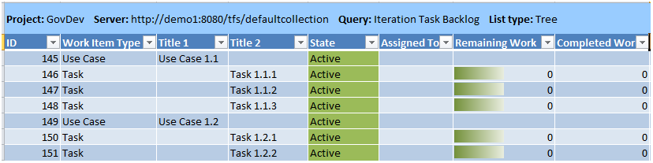

You can use the Iteration Task Backlog workbook to plan and track the progress of work for each iteration, also known as a sprint. This workbook calculates the team capacity and burndown based on the estimated and remaining effort defined for tasks. The default workbooks provide five worksheets that you can use to plan the work, calculate team capacity, and visualize the burndown for the iteration. You can create additional workbooks as needed to support additional iterations.
|
|
|---|
|
The Iteration Task Backlog workbook is stored on the server that hosts SharePoint Products for your team project. If a project portal has not been enabled for your team project, you cannot access the workbook. For more information, see Access a Team Project Portal and Process Guidance. Also, when you open the workbook for the first time, you must enable macros by clicking Options next to the Security Warning. To modify the contents, you must click Edit Workbook next to Server Workbook. For more information, see Workbooks (GovDev). If your team project was created before the release of Visual Studio Application Lifecycle Management (ALM), you will have to perform upgrade tasks so that your team project can use the Iteration Task Backlog workbook. For more information, see Adding Workbooks to Team Projects. |
|
In this topic |
Open the Iteration Task Backlog workbook from the Shared Documents folder in Team Explorer: 
|
Required Permissions
To view a team query or open a workbook, you must be assigned or belong to a group that has been assigned Read permissions for the team query folder for the team project. To modify a query, you must be assigned or belong to a group that has been assigned Contribute or Full Control permissions for the team query. For more information, see Organize and Set Permissions on Work Item Queries.
To create or modify use cases or tasks by using the workbook, you must be a member of the Contributors group or your View work items in this node and Edit work items in this node permissions must be set to Allow. For more information, see Team Foundation Server Permissions.
 Managing
the Iteration Task Backlog
Managing
the Iteration Task Backlog
You can use the Iteration Task Backlog workbook to determine team capacity and estimate the burndown for an iteration. This workbook provides five worksheets as the following illustration shows.
You use the worksheets in the following ways:
-
Iteration Task Backlog: Verify that all tasks are assigned to use cases. Review and assign levels of effort to each task. Assign tasks to iterations.
The Iteration Task Backlog worksheet references the Iteration Task Backlog team query, which is configured to display all use cases and linked tasks that are defined for the team project.
 Important
Important
If you have added tasks but have not linked them to a use case with the child link type, they will not appear in the iteration task backlog.
Within the workbook, you can filter the use cases based on product area. In addition, you can perform the following actions:
-
Settings: Schedule the iteration, and set the area and iteration filters for the iteration.
-
Interruptions: Specify holidays or other dates when no work will be performed for the team and for individual team members.
-
Capacity: Balance workload across the team.

-
Burndown: Estimate when the iteration will end, based on start dates for the iteration.
Creating
Iteration-Specific Workbooks
After you define the iterations for a product release, you can create iteration-specific workbooks. For more information about how to define iterations, see Create and Modify Areas and Iterations.
You create iteration-specific workbooks by performing the following actions:
-
Create an iteration-specific query.
-
Save a copy of the Iteration Task Backlog workbook.
-
Configure the Iteration Task Backlog worksheet to refresh data from its iteration-specific query.
-
Customize the remaining worksheets in the workbook as Planning an Iteration describes later in this topic.
To create an iteration-specific query
-
Open Team Explorer, and expand your team project node.
-
Expand the Work Items node, expand Team Queries , and expand Workbook Queries.
-
Right-click Iteration Task Backlog, and then click Copy.
-
Right-click Workbook Queries, and then click
 Paste.
Paste. -
In the Specify new query item name dialog box, type or modify the name of the query to correspond to the name of the iteration that you are defining, and then click OK.
-
Right-click the query that you just created and named, and then click Edit Query.
The Query Editor opens in a new tab.
-
Click Click here to add a new clause, and then click And.
-
In the Field list, click Iteration Path.
-
In the Operator list, click Under.
-
In the Value list, click the iteration that you want to use.
-
Click Run Query.
Verify that the results match your expectations.
-
Click
 Save Query.
Save Query.
To save a copy of the Iteration Task Backlog workbook
-
Open Team Explorer, and expand your team project node.
-
Expand the Documents node, expand Shared Documents, and expand Iteration 1.
-
Right-click Iteration Task Backlog.xlsm, and then click Copy.
-
Right-click the folder to which you want to copy the workbook, and then click
Paste. Note
Note
You can drag the workbook to any folder under the Shared Documents node.
-
Right-click the copied workbook, and then click Rename.
-
Type the name of the iteration-specific workbook, and then press ENTER.
To configure the Iteration Task Backlog worksheet to refresh data from the iteration-specific query
-
Open Team Explorer, and expand your team project node.
-
Right-click the iteration-specific workbook that you want to configure, and then click
 Open.
Open. -
In the File Download dialog box, click OK .
The workbook opens in Office Excel. Macros are automatically disabled. At the top of the workbook, the notices in the following illustration appear.
-
Click Options.
-
In the Microsoft Office Security Options dialog box, under Macros, click Enable this content, and then click OK.
-
Click Edit Workbook.
-
On the Team tab in Office Excel, in the Work Items group, click Configure, click List , and then click the ellipsis (… ).
-
In the Refresh from query list, find the iteration-specific query that you created earlier, click that query, and then click Apply .
The worksheet will update to list the work items that are found by the iteration-specific query that you selected. This process might take a few minutes.
-
Review the worksheet to make sure that the use cases and tasks that are listed meet your expectations.
-
Click
. The workbook is saved to your team project portal site.
Estimating
and Assigning Task Effort
The Iteration Task Backlog workbook contains the set of use cases and associated tasks that the team plans to implement for a specific iteration. The team estimates the level of effort that each task will require. Each team member signs up for the tasks to which they can commit, based on their skill set and workload. For more information, see Sprint Planning Meeting .
To estimate task effort and assign tasks
-
In the Iteration Task Backlog workbook, click the Iteration Task Backlog worksheet.
-
If you have opened a workbook that you have saved to your local computer, on the Team tab, in the Work Items group, click Refresh.
This step helps make sure that the list of use cases and tasks contains the most current information.
-
(Optional) To filter the list of use cases based on product area, click the
 down arrow next to Area, and then click the check box next
to each product area that you want to include.
down arrow next to Area, and then click the check box next
to each product area that you want to include. -
Review the tasks that are assigned to each use case, and define additional tasks if necessary.
For more information, see Adding Use Cases and Tasks to the Backloglater in this topic.
-
In each task, verify that Remaining Work and Completed Work contain values.
Note
Use the Excel editing features to change the values for multiple cells. For more information about how to modify cells in a worksheet, see topics about how to enter and edit data in the Office Excel Help.
Update the following fields for each task as needed:
Field Name
Description
Activity
The type of activity that is required to perform a task.
Remaining Work
The number of hours of work that must be spent to complete a task.
Completed Work
The number of hours of work that have already been spent to complete a task.
Assigned To
The name of the team member who commits to complete the task.
Important
If you subdivide a task into subtasks, specify hours for the subtasks only. In Team Foundation reports, hours that you define for the subtask are rolled up as summary values for the parent task and the use case. If you assign hours in both places, hours will be counted twice in those reports that track hours. For information about how to correct this condition, see Address Inaccuracies Published for Summary Values.
-
On the Team tab, in the Work Items group, click Publish.
Note
You can use the undo feature in Excel to undo recent changes that you made to work items before you publish the changes.
For more information, see Publish Work Items in Office Excel.
-
Click
.
Planning
an Iteration
Before you plan an iteration, you might want to review the product backlog and make sure that the iteration that is assigned to each use case meets your planning expectations. For more information, see Use Case Planning Workbook.
When you plan an iteration, you should iteratively perform the following steps until the plan meets your team's objectives and capacity:
Scheduling the Iteration
To schedule the iteration, you specify the filters that are applicable for the iteration and define the start and end date for the iteration. This step provides the data that is necessary to calculate team capacity and burndown.
To schedule the iteration
-
In the Iteration Task Backlog workbook, click the Settings worksheet.
-
(optional) Click the
down arrow in the cell next to Area, and then click the
product area that you want to include. -
Click the
down arrow in the cell next to Iteration, and then click
the iteration that you want to include. -
Click the cell next to Start Date, and type the calendar date for the start of the iteration.
The date format should be month/day/year (for example, 8/2/2009).
-
Click the cell next to End Date, and type the calendar date for the end of the iteration.
Accounting for Holidays and Planned Interruptions
You can use the Interruptions worksheet to specify days when no work will be performed, either by the team or a team member. The number of days that are calculated for the iteration is updated on the Settings worksheet to reflect these interruptions.
To account for holidays or planned work interruptions
-
In the Iteration Task Backlog workbook, click the Interruptions worksheet.
-
Under Planned Interruptions, for each team member that has planned vacation days or work interruption days, perform the following steps:
-
Click a cell under the Team Member column, and then click the name of the team member.
-
Fill out the Description, Start Date, and End Date.
The date format should be month/day/year (for example, 8/2/2009).
-
Add a row for each time-off period.
-
-
Under Holidays, perform the following steps:
-
Fill out the Description, Start Date, and End Date.
The date format should be month/day/year (for example, 8/2/2009).
-
Add a row for each time off period.
Add any dates that fall within the planned iteration to the worksheet.
-
Determining Team Capacity and Load Balancing Work
Before you balance workload across team members, make sure that the following steps have been completed:
-
A value has been defined for the Remaining Work and Completed Work for each task.
-
The Iteration Path is assigned to all tasks that the team intends to complete for the current iteration that the team is planning.
-
Time off for each team member and the team is specified on the Interruptions worksheet.
To determine team capacity and balance workload across the team
-
In the Iteration Task Backlog workbook, click the Capacity worksheet.
-
Under Individual Capacity, add each team member to the list, and specify the expected hours that each team member will work on the project each day.
The following fields should update automatically with information that is specific for each team member:
Column
Description
Days
The number of working days during the iteration.
Capacity
The total number of working hours left for the iteration. This value is calculated based on the length of the iteration as defined in the Settings worksheet, the current date (which indicates how many days are left in the iteration), and the hours per day that is specified for the team member.
Important
You cannot plan work that is in the past. The cells in the Capacity column reference the dates on the Settings worksheet and the current date when calculating capacity.
Assigned
The total number of hours that are assigned for the iteration. This number is a rollup of all the Remaining Work hours that are assigned to tasks.
Utilized
The total number of hours of the team member's capacity that are allocated. This number is a roll up of all the Remaining Work hours of tasks that are assigned to that team member, but the number cannot exceed the team member's capacity.
Over
The number of hours by which the team member is overallocated. This number is calculated by subtracting the Capacity from Assigned hours.
Under
The number of hours that the team member has to work on the project but that are not being used. This number is calculated by subtracting the Utilized from Capacity hours.
-
Review the Team Capacity chart, and determine whether the team is over or under utilized. The ideal chart will show close to 100% Utilized, with no red bar showing Over utilization and a small green bar that shows Under utilization. For an example, see the following illustration:
To correct for over or under utilization, perform one of the following actions:
-
If the team is over-utilized, click the Iteration Task Backlog worksheet, and reassign some tasks to a later iteration.
-
If the team is under utilized, open the Product Backlog workbook, and reassign some use cases and tasks to the iteration that you are planning. Refresh the Iteration Task Backlog worksheet to show the newly assigned tasks.
Make these adjustments before balancing workload across team members.
-
-
Review the Individual Capacity chart, and identify team members who are over and under allocated.
As the following illustration shows, one team member is over allocated, and three team members are under allocated.
-
Click the Iteration Task Backlog worksheet, and take the following actions:
-
Determine how to reassign work to use resources effectively, with no one over allocated and no one under allocated.
-
Discuss with the team which tasks are most appropriate to reassign.
-
Change the assignment for tasks to be reassigned. Repeat this step until no team member is over allocated or under allocated.
The following illustration shows how the workload has been balanced across the four team members.
-
-
Save the workbook.
Visualizing the Burndown
The data that appears in the Burndown worksheet is derived from the data warehouse.
|
|
|---|
|
The Burndown worksheet requires that the team project collection where your team project is stored was provisioned with SQL Server Analysis Services. |
To visualize the burndown for the iteration
-
In the Iteration Task Backlog workbook, click the Burndown worksheet.
-
Click the cell next to Trend Start Date, and type the date that you want to start the iteration in month/day/year format (for example, 8/2/2009).
-
Click Update now.
The chart updates with data that is stored in the data warehouse.
Note
You might experience a delay between the time when you updated the effort fields for tasks and when that data is available from the data warehouse.
The Ideal Trend line calculates a slope or trajectory for when work will be completed based on the trend start date, the amount of work remaining, and the end date for the iteration.
-
(Optional) To visualize the burndown based on different trend start dates, you can select the Automatic Chart Update check box.
The chart will be refreshed every time that you change Trend Start Date.
Tracking
the Progress of the Iteration
After the iteration is underway, you can use the Iteration Task Backlog workbook to determine whether the team is on track to completing the work. To track progress, each team member must update the Completed Work and Remaining Work for each task.
|
|
|---|
|
In addition to the Burndown worksheet, you can view the rate at which the team is progressing and determine the team burn rate by viewing the Burndown and Burn Rate report. For more information, see Burndown and Burn Rate Report (GovDev). |
To track the progress of the iteration
-
Open the Iteration Task Backlog workbook, and then click the Burndown worksheet.
-
Click Update now.
-
Review the rate of work that the team is completing and the work that is still remaining. The Ideal Trend line should be above the blue area, which indicates that work is progressing as expected. The following illustration shows a healthy burndown chart:
Adding
Use Cases and Tasks to the Iteration Task Backlog
You can create use cases and tasks by adding them to the Iteration Task Backlog workbook and publishing the workbook to the database for tracking work items. For more information about how to modify work items by using Office Excel, see Performing Top-Down Planning Using a Tree List of Work Items (In Excel).
To add use cases and tasks to the iteration task backlog
-
In Office Excel, open your iteration-specific workbook.
-
If you have opened a saved workbook, on the Team tab, in the Work Items group, click Refresh.
This step helps make sure that the list of use cases and tasks contains the most current information.
-
For each use case that you want to add, click the row at the bottom of the list, and specify the following information for each use case that you want to add:
-
In the Work Item Type list, click Use Case .
Note
You must specify the type of work item that you want to add before you can publish it.
-
In Title, type text that identifies the customer as specifically as possible and describes the customer's goal at a high level.
-
In Iteration, click the iteration that is set for this workbook.
Click a different iteration if the work is to be performed in another iteration.
-
-
For each task that you want to add, insert a row after the use case, and specify the following information:
-
In the Work Item Type list, click Task.
-
In Title 2, type an entry that identifies the customer as specifically as possible and describes the customer's goal at a high level.
Note
Make sure that you type the task title in the Title 2 column. This step creates a link between the use case and the task when the workbook is published.
-
In Iteration, click the iteration that is set for this workbook.
Click a different iteration if the work is to be performed in another iteration.
-
-
(Optional) Specify information for the following task fields:
Field Name
Description
Activity
The type of activity that is required to perform a task.
Original Estimate
The number of hours that are required to complete a task.
Remaining
The number of hours that remain to finish the task.
Completed
The number of hours that have already been spent working on a task.
Note
Use the Excel editing features to change the values for multiple cells. For more information about how to modify cells in a worksheet, see topics about how to specify and edit data in the Help for Microsoft Excel.
-
(Optional) Add information to the remaining fields as appropriate.
For more information about each field, see Use Case (GovDev) or Task (GovDev) .
-
(Optional) To show additional Team Foundation fields in the list, on the Team tab, in the Work Items group, click Choose Columns.
For more information, see Add or Remove Columns in a Work Item List.
-
(Optional) Save the workbook.
You can later open the local copy of the workbook, refresh the list, and make additional changes. You do not need to open the workbook from Team Explorer each time.
-
On the Team tab, in the Work Items group, click Publish.
For more information, see Publish Work Items in Office Excel.
Additional
Resources for Managing the Iteration Backlog
For information about how to modify use cases and tasks by using Microsoft Excel, see the following topics: